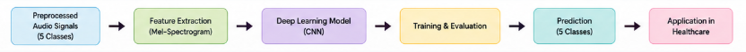
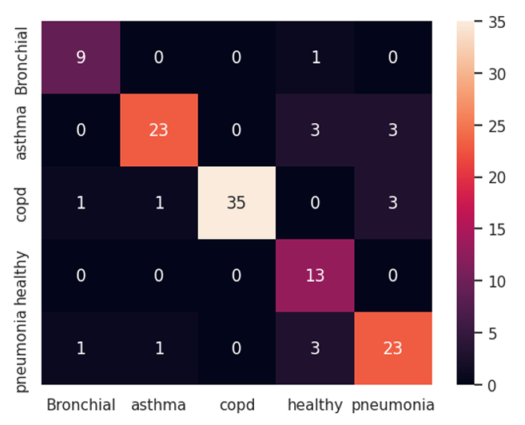
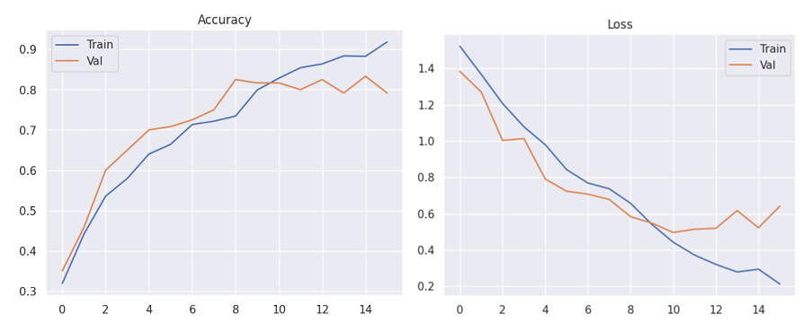
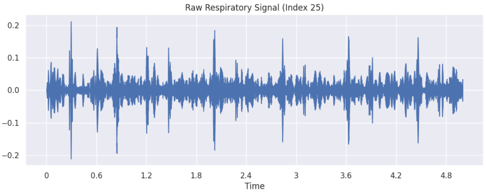
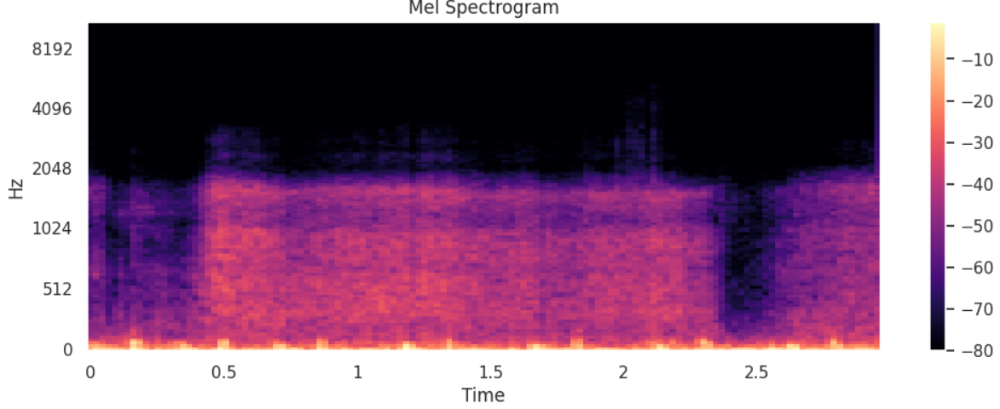
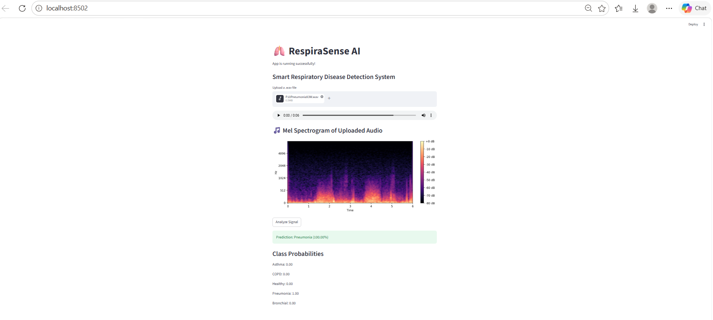

Transforming lung sounds into clinical insights
Respiratory diseases such as asthma, COPD, and pneumonia are among the leading causes of global health concerns. Early diagnosis is critical, but traditional methods require expert analysis and clinical infrastructure. There is a need for an automated, accessible, and accurate system that can analyze respiratory sounds and assist in disease identification.
This project presents a deep learning-based system that classifies respiratory sounds into five categories: asthma, bronchial conditions, COPD, pneumonia, and healthy cases. The system converts audio signals into Mel spectrograms and uses a Convolutional Neural Network (CNN) for classification. A user-friendly interface allows real-time prediction from uploaded audio files.
Asthma Detection Dataset (V2)
1211
| Class | Number of Samples |
|---|---|
| Asthma | 288 |
| Bronchial | 104 |
| COPD | 401 |
| Healthy | 133 |
| Pneumonia | 255 |
The system follows a structured pipeline that transforms raw respiratory audio into actionable diagnostic predictions. Preprocessed signals were directly used without additional preprocessing.

Figure 1: Complete workflow of the RespiraSense AI system
(Mel Spectrogram)
Mel Spectrograms are used to convert audio signals into time-frequency representations. This approach captures important acoustic features and aligns with human auditory perception, making it highly effective for respiratory sound classification.
The classification model is based on a Convolutional Neural Network (CNN), designed to extract spatial and temporal features from Mel spectrograms.
Feature extraction
Non-linearity
Dimension reduction
Prevents overfitting
Classification layers
Class probabilities
93.5%
84.17%
86%
COPD (F1-score: 0.93)
~0.85

Figure 2: Confusion Matrix

Figure 3: Training Accuracy & Loss Curves
A Streamlit-based GUI provides an intuitive interface for end-users to interact with the model in real-time.
Easily upload respiratory audio files for analysis
View signal waveforms and Mel spectrograms
Instant disease classification results

Waveform Visualization

Mel Spectrogram

Prediction Result
The proposed system successfully integrates deep learning and biomedical signal processing to classify respiratory diseases with high accuracy. It demonstrates the potential of AI in assisting medical diagnosis and improving healthcare accessibility.